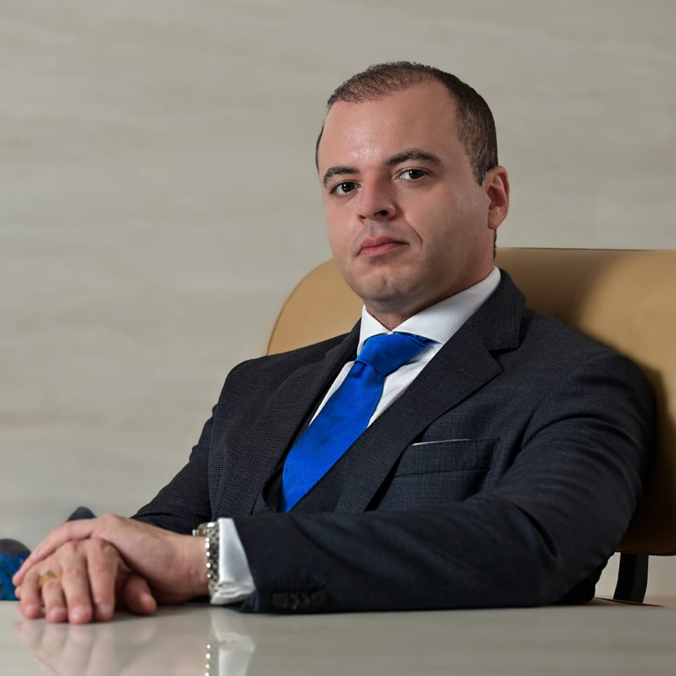

Com mais de uma década de atuação, o Rocha & Queiroz nasceu da união de advogados
egressos das instituições de ensino mais conceituadas do país e consolidou uma prática que une
rigor técnico e inovação em duas frentes: Direito do Trabalho estratégico para
lideranças e Direito Tributário empresarial.
Uma trajetória marcada pela especialização profunda em
Direito e Processo do Trabalho.
Essa especialização se traduz na defesa estratégica de profissionais de
instituições financeiras e da alta gestão: executivos e diretores que precisam de
paridade técnica no momento de proteger seu patrimônio e sua trajetória profissional.
Ao longo dos anos, desenvolvemos uma prática pautada na eficiência e no dinamismo, onde
cada caso é tratado como um ecossistema único. Nossa atuação é estratégica, focada em
antecipar cenários e garantir simetria técnica aos nossos clientes frente aos maiores
desafios do mercado. Acreditamos que a advocacia moderna exige visão de futuro.
Acompanhando as transformações do mercado corporativo, expandimos nossa expertise para a
área Tributária, incorporando especialistas dedicados à inteligência fiscal. Essa evolução
nos permite unir o reequilíbrio das relações laborais à otimização tributária, sempre
pautados pela eficiência, precisão técnica e dinamismo que o cenário contemporâneo exige.
Atuação históricaPara você
Direito Trabalhista
Estratégia e proteção para a alta gestão.
Atuação consultiva e contenciosa pautada pela inovação jurídica, para que lideranças
tenham paridade técnica e estratégica nas relações de trabalho, do contrato ao
desligamento.
Especialistas dedicados à inteligência fiscal para estruturar, revisar e sustentar
decisões tributárias com segurança e consistência, com foco na redução de contingências
e na eficiência da carga tributária.
Uma defesa consistente nasce de um estudo exaustivo. Diferenciamo-nos pelo investimento
em capital intelectual: mantemos uma biblioteca e uma hemeroteca especializadas, além de
um robusto banco de dados jurisprudencial próprio.
Esse acervo sustenta a construção de teses customizadas, nas duas áreas de atuação.
Acervo próprio
Biblioteca especializada
Hemeroteca especializada
Banco de dados jurisprudencial
01
Estudo
Cada caso começa pelo levantamento de fatos, documentos e precedentes, com apoio do
acervo próprio: doutrina, periódicos especializados e jurisprudência organizada.
02
Tese
Construção de uma tese sob medida, com o rigor analítico que desafios jurídicos
complexos exigem, seja na esfera trabalhista, seja na tributária.
03
Estratégia
Definição do caminho mais adequado para cada caso, consultivo ou contencioso,
com antecipação de cenários e riscos.
04
Acompanhamento
Condução próxima da demanda, com transparência e comunicação clara ao cliente
em cada etapa.
04 Valores
O que sustenta cada decisão.
O escritório destaca-se pela alta especialização no atendimento consultivo em Direito do
Trabalho e Direito Tributário. No campo contencioso, a atuação é técnica e incisiva,
compreendendo o manejo de medidas processuais complexas e o acompanhamento estratégico das
demandas em todas as instâncias judiciais.
i.
Confiabilidade
Nossa missão é a defesa intransigente dos interesses de nossos constituintes. Atuamos
sob os mais rígidos padrões éticos, resguardando valores institucionais e estabelecendo
uma relação de transparência absoluta e confiabilidade mútua em cada etapa da
consultoria jurídica.
ii.
Especialização
Contamos com um corpo jurídico de sólida formação acadêmica. Nossa expertise une uma
atuação histórica na área Trabalhista a uma expansão estratégica e robusta no Direito
Tributário, para uma visão 360° do passivo e do ativo empresarial.
05 Sócios-fundadores
Dois fundadores. Uma assinatura.
“Advocacia moderna não se limita a processos, mas a soluções.”
Sócio-fundador
Dr. Ramon Rocha
Fundador do escritório Rocha & Queiroz Advogados. Especialista em Direito do
Trabalho, Direito Processual do Trabalho e Direito Processual Civil.
Graduação
Direito · Universidade Presbiteriana Mackenzie
Pós-graduação
Direito do Trabalho · PUC-SP
Inscrição
OAB/SP 330.839

Sócio-fundador
Dr. Jefferson Queiroz
Fundador do escritório Rocha & Queiroz Advogados. Especialista em Direito do
Trabalho, Direito Processual do Trabalho e Direito Processual Civil.
Graduação
Direito · Faculdades Metropolitanas Unidas (FMU)
Inscrição
OAB/SP 316.188
Os sócios lideram uma equipe de advogados e especialistas dedicada às
áreas Trabalhista e Tributária.
Apresente o seu contexto ao escritório. Atendemos executivos, lideranças e empresas nas
unidades da Av. Paulista e da Av. Marquês de São Vicente, em São Paulo.